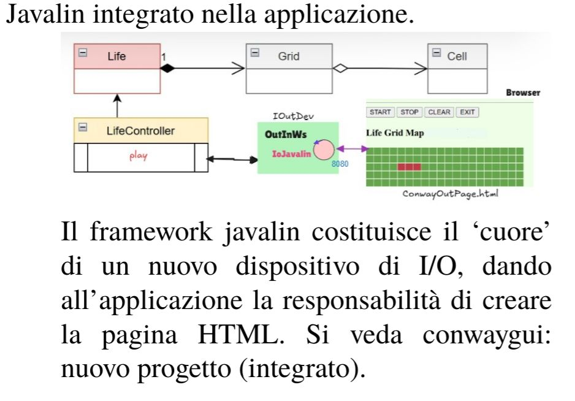

Introduction
Realizzazione in Java del GAME OF LIFE DI CONWAY
Requirements
- R1: Dotare il gioco Life. di una pagina HTML come dispositivo di I/O
- R2: La pagina deve costituire un componente esterno alla applicazione secondo la architettura riportata in IoJavalin.
- R3: Il gestore del gioco sarà l'utente che ha aperto per primo (owner) una pagina HTML collegata al gioco. In altre parole, solo la pagina dell'owner avrà pulsanti di comando START/STOP/CLEAN/EXIT attivi.
- R4: La pagina HTML deve essere aggiornata in modo automatico man mano il gioco procede
- R5: Un utente non owner che si collega mentre il gioco è in corso, dovrebbe vedere lo stato attuale della griglia in modo corretto
- R6: La pagina HTML deve indicare se il gioco continua anche nel caso di griglia vuota o di configurazione stabile
- R7: Il deployment del gioco deve avvenire mediante Docker DA FARE
Requirement analysis
Riportiamo la architettura logica del sistema realizzato usando Java.

La introduzione di una pagina HTML cambia la natura del sistema, che diventa un sistema distribuito, in quanto alla nostra applicazione si affianca un browser.
La introduzione di una pagina HTML cambia la natura del sistema, che diventa un sistema distribuito, in quanto alla nostra applicazione si affianca un browser.
- Per R3 dovremo prevedere un utente owner e utenti non owner, devono esistere nell'interfaccia grafica dei tasti START/STOP/CLEAN/EXIT utilizzabili solo dall'utente owner, verrà utilizzata l'interfaccia GameController definita nello Sprint1. I tasti START/STOP/CLEAR dovranno mandare i rispettivi dispatch alla classe che implementa GameController:
- START: onStart()
- STOP: onStop()
- CLEAN: onClear()
- Per R4 implementiamo l'interfaccia IOutDev con la classe IOController.
Problem analysis

La comunicazione avviene via WebSocket per permettere l'aggiornamento in termpo reale secondo R4, con un canale aperto alla connessione del browser al server, e con messaggi in un formato SENDER::COMMAND. Il formato è stato descritto con questa grammatica per semplificare nel parsing lato server e la divisione tra il SENDER (in modo da discriminare chi è il giocatore owner) e il comando inviato dal browser. Il sender è identificato da un pageId generato lato client.
function generatePageId(){pageId = ""+Math.floor(Math.random()*10000000);}